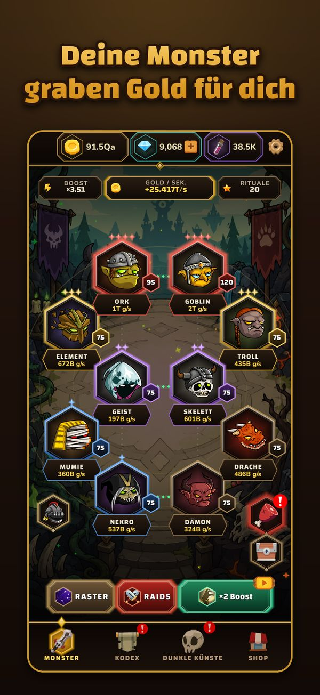
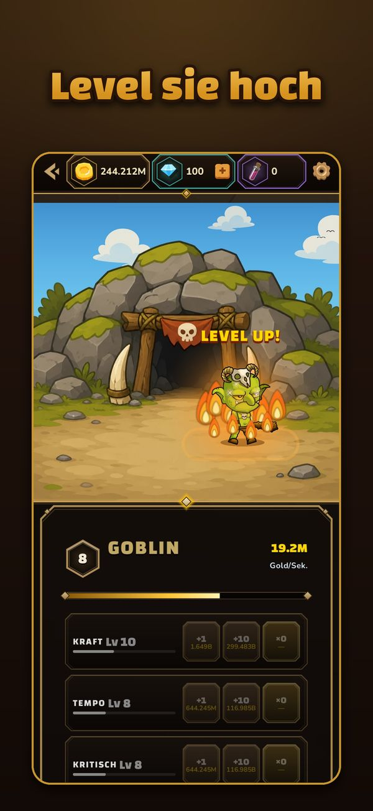
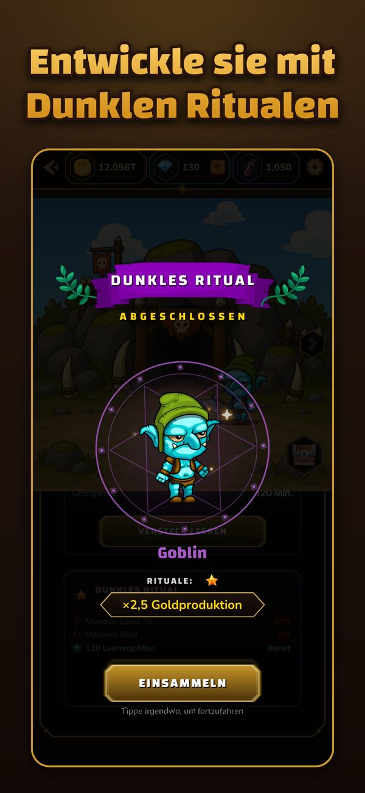
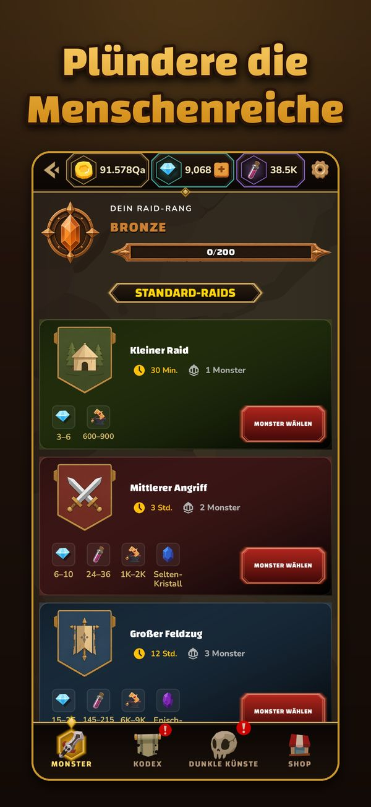
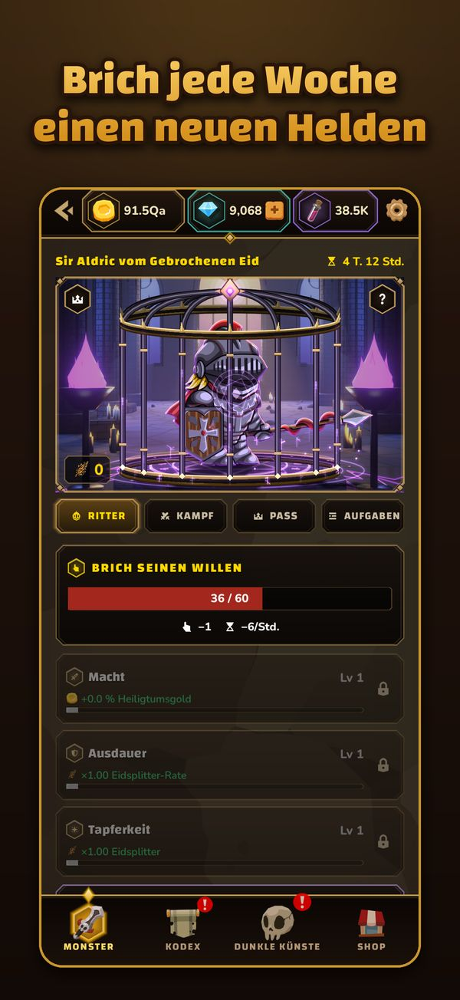
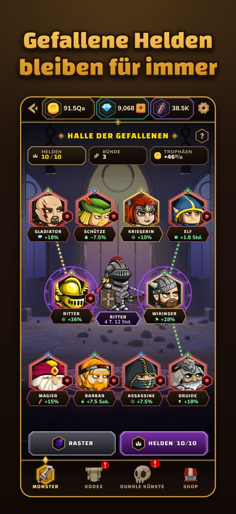

Ein Dark-Fantasy-Idle-Spiel: Deine Monster graben Gold
Du bist der Dunkle Alchemist. Unter den Bergen schlafen zehn Monster, und jedes, das du weckst, gräbt jede Sekunde Gold für dich, auch wenn die App geschlossen ist. Mit dem Gold machst du sie stärker, weckst das nächste Monster und siehst zu, wie dein Vermögen bis in die Trillionen wächst.
Ein Konto brauchst du nicht: Ein kurzes Tutorial startet dich mit einem Goblin, danach öffnet sich das Spiel Schritt für Schritt.
Screenshots






So spielst du: der Idle-Kreislauf
- Einsammeln. Monster produzieren jede Sekunde Gold. Kommst du nach einer Pause zurück, bekommst du, was sie inzwischen gegraben haben.
- Leveln. Jedes Monster hat drei Eigenschaften: Kraft, Tempo und Kritisch. Sie multiplizieren sich, also bremst die schwächste das ganze Monster. Sein Level ist seine niedrigste Eigenschaft, und jedes neue Level kommt mit LEVEL UP! und einem Flammenstoß.
- Wachsen. Kauf das nächste Monster für eine leere Kammer. Jedes kostet viel mehr und bringt seine eigene Fähigkeit mit.
- Raiden, schmieden, forschen. Schick Monster auf Raids, schmiede Ausrüstung aus der Beute und erforsche die Dunklen Künste.
- Verwandeln. Ab Level 75 ist ein Monster bereit für sein Dunkles Ritual.
Zehn Monster mit eigenen Fähigkeiten
- Goblin Hortet ein geheimes Versteck, dessen Multiplikator steigt, je länger du es wachsen lässt.
- Ork Berserkerwut: ein kurzer, gewaltiger Gold-Boost.
- Troll Im Plünderer-Modus tauscht er etwas Gold gegen Handwerksmaterial.
- Elementar Verstärkt die Synergien seiner Nachbarn und entfesselt eine Sturmwoge.
- Geist Verdient mehr, während du weg bist, als wenn du zusiehst.
- Skelett Baut einen Knochenvorrat auf, der dein Gold steigert und Ritual-Raids ersetzen kann.
- Mumie Sammelt offline Zeitsplitter, die andere Monster stärken.
- Nekromant Wandelt überschüssiges Handwerksmaterial in das um, was dir fehlt.
- Dämon Bietet alle paar Stunden Pakte an. Nur einer lässt sich besiegeln.
- Drache Der Drachenfürst stärkt alle anderen Monster.
Platziere sie klug: Synergien zwischen Nachbarn
Manche Monster stärken ihre Nachbarn, andere stehen ihnen im Weg. Im RASTER-Modus verschiebst du sie und siehst sofort, was jeder Zug mit deinem Gold macht.
Dunkle Rituale: Monster weiterentwickeln
Hat ein Monster Level 75 erreicht und die Raids erledigt, die sein Ritual verlangt, verwandelst du es mit einem Dunklen Ritual. Das kostet Leerensplitter. Seine Eigenschaften fallen auf Level 1 zurück, aber jedes Ritual steigert sein Gold auf das 2,5-Fache und gibt all deinen Monstern 10 % mehr. Das erste und das dritte Ritual bringen eine neue Gestalt, und nach vier Ritualen steigt die Levelgrenze von 75 auf 200.
Raids, Beute und Schmiede
Raubzüge gegen Menschenstädte
Schick deine Monster gegen Siedlungen der Menschen, vom 30-minütigen Kleinen Raid mit einem Monster bis zum eintägigen Epischen Krieg mit vier. Raids bringen Leerensplitter, Forschungspunkte, Kristalle und Handwerksmaterial, und ein steigender Raid-Rang öffnet schwerere Menschen-Raids.
Waffen, Rüstungen, Ringe und Amulette schmieden
Jedes Monster hat vier Ausrüstungsplätze. Seine Ausrüstung schmiedest du aus seinem eigenen Material und Kristallen, von Gewöhnlich bis Legendär+. Jedes Teil steigert sein Gold.
Die Dunklen Künste erforschen
Mit Forschungspunkten kaufst du dauerhafte Verbesserungen für Goldproduktion, Raids, Boost, Offline-Gold, Monster-Synergien und Events. Sie bleiben über jedes Dunkle Ritual hinweg erhalten.
Gefallene Helden: jede Woche ein neuer Held
Jeden Montag sitzt ein neuer Held des Lichts in einer entweihten Kathedrale im Käfig. Zehn Helden wechseln sich ab: Ritter, Wikinger, Bogenschütze, Kriegerin, Barbar, Assassine, Gladiator, Elf, Magier und Druide, die meisten mit einer eigenen Regel der Woche. Das Event öffnet sich auf der Monsterkarte, sobald zwei Monster für dich arbeiten.
Den Willen brechen, dann in der Arena kämpfen
Jedes Tippen auf den Käfig zehrt an der Willenskraft des Helden. Bricht sie, zerspringt der Käfig und der Held kniet nieder. Mit Eidsplittern levelst du ihn bis Level 300, mit neuen Gestalten bei Level 100 und 200. In der Arena tippst du auf SCHILD, wenn der schrumpfende Ring im goldenen Kreis liegt, parierst den Schlag und schlägst zurück.
Die Halle der Gefallenen
Helden, die du auf Level 200 bringst, bleiben für immer in der Halle der Gefallenen im Kodex. Die zwei Altäre zählen doppelt, und jeder Held gibt deinen Monstern einen dauerhaften Bonus.
Offline-Gold: Fortschritt, auch wenn du weg bist
Schließ die App, und deine Monster graben weiter, anfangs vier Stunden lang. Die Dunklen Künste und die Halle der Gefallenen heben diese Grenze an. Bist du nach fünf Minuten oder länger zurück, sammelst du das Gold einfach ein oder vervielfachst es mit einem freiwilligen Belohnungsvideo oder mit Leerensplittern.
Tägliche Missionen, Login-Belohnungen und das Dunkle Festmahl
Im Kodex warten tägliche und wöchentliche Missionen, Erfolge und ein Login-Kalender mit Truhen. Einmal am Tag gibt das Dunkle Festmahl allen Monstern zwei Stunden lang +50 % Gold, mit einem freiwilligen Video +100 %. Und auf der Karte wartet die tägliche Lotterie.
Häufige Fragen
Ist Idle Monster Forge kostenlos?
Ja, Laden und Spielen sind kostenlos. Leerensplitter, die Premiumwährung, verdienst du auch im Spiel, zum Beispiel mit Raids, Missionen und dem Login-Kalender.
Was kann ich kaufen?
Leerensplitter-Pakete, „Keine Werbung“, zwei dauerhafte Produktions-Boosts, die monatlichen Pässe des Dunklen Alchemisten (Abos, die sich automatisch verlängern) und den wöchentlichen Heldenpass. Alle Käufe sind freiwillig und laufen über den App Store.
Gibt es Werbung?
Zwangswerbung gibt es nicht. Freiwillige Belohnungsvideos geben dir Boni wie mehr Offline-Gold, extra Raid-Beute oder einen Gold-Boost, und du brauchst sie nie, um weiterzukommen. Mit „Keine Werbung“ bekommst du diese Belohnungen ohne Video.
Verdienen meine Monster Gold, wenn das Spiel geschlossen ist?
Ja, bis zu deiner Offline-Grenze: anfangs vier Stunden, mehr mit Forschung und der Halle der Gefallenen.
Kann ich ohne Internet spielen?
Ja, das Spiel läuft auch ohne Verbindung. Belohnungsvideos und Käufe brauchen Internet.
Auf welchen Geräten läuft das Spiel?
Idle Monster Forge ist fürs iPhone gemacht und braucht iOS 17 oder neuer.
In welchen Sprachen gibt es das Spiel?
In 19: Deutsch, Englisch, Französisch, Spanisch, Portugiesisch, Italienisch, Niederländisch, Polnisch, Türkisch, Russisch, Ukrainisch, Indonesisch, Filipino, Vietnamesisch, Thai, Japanisch, Koreanisch, Chinesisch (vereinfacht) und Hindi. Umstellen kannst du unter Einstellungen > Sprache.
Wie stelle ich meine Käufe wieder her?
Tippe unten im Shop oder in den Einstellungen auf „Käufe wiederherstellen“, angemeldet mit der Apple-ID, mit der du gekauft hast. So kommen Käufe wie „Keine Werbung“ und die Produktions-Boosts zurück.
Brauche ich ein Konto?
Nein. Es gibt keinen Login, dein Fortschritt wird auf deinem iPhone gespeichert.
Welche Daten erfasst das Spiel?
Anonyme Spielstatistiken und Absturzberichte, um Fehler zu beheben und das Spiel zu verbessern. Belohnungsvideos kommen von Google AdMob, das um deine Einwilligung bittet, wo das Gesetz es verlangt. Alle Zahlungen wickelt Apple ab. Die Details stehen in der Datenschutzerklärung (auf Englisch).
Wo bekomme ich Hilfe?
Schreib an mariohaesler@protonmail.com, mit deinem iPhone-Modell, deiner iOS-Version und dem, was passiert ist. Ein Screenshot hilft.
Support und Kontakt
Fragen, ein Fehler oder eine Idee? Schreib an mariohaesler@protonmail.com.